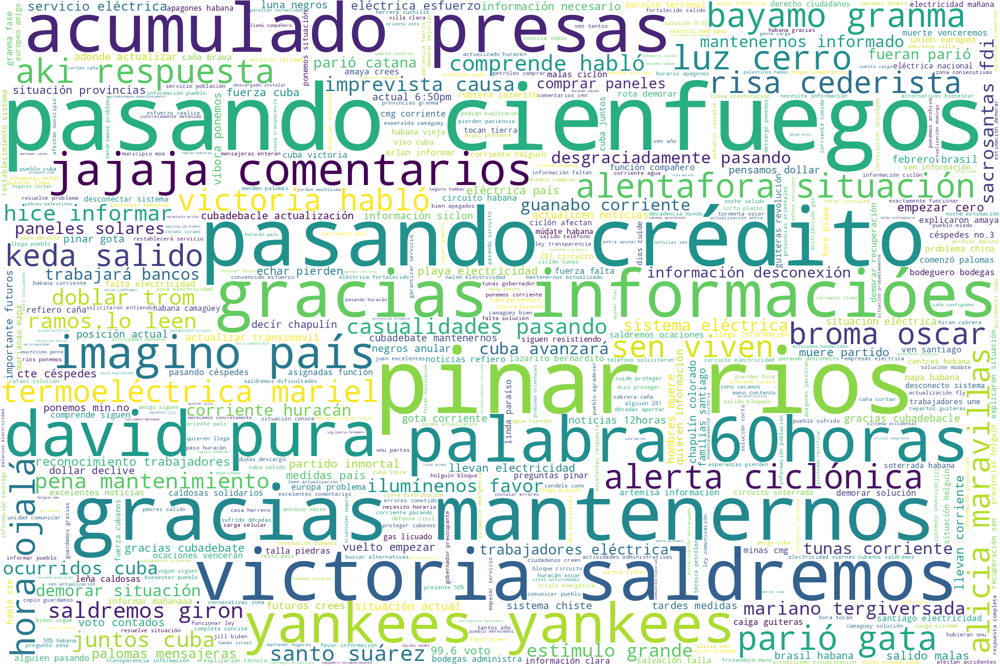

Cuba Comenta
En
Cubadebate
se comenta sobre:
Leer a Martí
Cuba cierra la jornada de este sábado con 796 nuevos casos de COVID-19
La Tira de los Lectores: ¿Qué paisaje cubano te ha robado el aliento?
Investigaciones preliminares: No se han encontrado evidencias que confirmen caída de meteorito en Cuba
En fotos, un volcán entra en erupción por primera vez en 6 000 años en Islandia
La danza de las palabras en la luz: un pacto entre narración oral escénica y literatura (+ Video y Podcast)
Universidad Tecnológica de La Habana anuncia inicio de matrícula pendiente para nuevos ingresos
El asteroide más grande del año pasará mañana cerca de la Tierra a 124 000 kilómetros por hora
¿Cómo explicar y hablar de ciencia en Cuba? (+ Podcast)
Servicios de Whatsapp, Facebook e Instagram se restablecen tras caer en parte de Latinoamérica, EEUU, Europa y Asia
Aplican medidas más estrictas en Las Tunas ante situación epidemiológica por la COVID-19
La economía mundial, enrgía y el medio ambiente en medio de la pandemia de COVID-19(+Video).20-2021 (+Video).
Cuba ratificó en foro de la CEPAL compromiso con desarrollo sostenible del Caribe
Vale la pena… volver a escuchar: Pero no es como para sentirse inseguro (+ Podcast)
Aplicación móvil TrabajarEnCuba gana aceptación en Camagüey
Comercializan en La Habana artículos deportivos de marca Batos
¿Qué número ves en la imagen? Pocas personas logran responder bien
Trump: “Biden solo entrará en la Casa Blanca si prueba que sus ridículos 80 millones de votos no son fraudulentos”
Word Cloud (Nube de Palabras)
